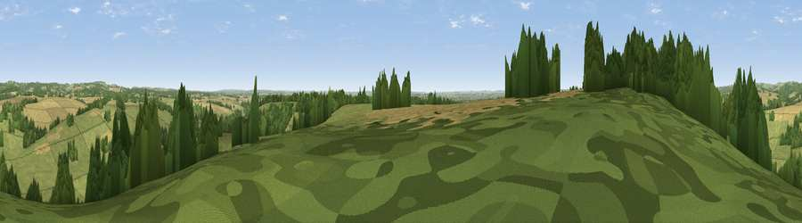

Viewpoint near Stoke
#27610 in England · top 37% of its area beats it · near StokeThe view, rendered

A 360° render of this exact spot computed from the terrain model, tree cover and land cover — summer colours, afternoon light, calibrated against photographs of famous viewpoints. Real trees, hedges and buildings will differ in detail.
The panorama
Grey silhouette: terrain skyline in each direction (720 bearings, Earth curvature and refraction included). Dashed green: skyline with trees (+15 m) and buildings (+8 m) as obstacles. Blue strip: how far the ground is visible on each bearing.
Where the view opens
Wedge length = distance to the farthest visible ground on that bearing (vegetation-aware). Rings at 10, 25 and 50 km.
What fills the view
50% grassland · 26% cropland · 23% woodland · 1% built-up
Angular shares of the visible panorama (visual magnitude), not map area. Landscape diversity 0.47 (0–1 Shannon).
Key numbers
More beautiful places nearby
The staircase of upgrades: each row has a higher view potential than everything closer. Driving times are estimates from straight-line distance, calibrated against real road routing — check an actual route before setting out.
| Place | Direction | Drive | Score |
|---|---|---|---|
| Stoke Hill | SSE · 0 km | ~2 min | 48.2 |
| Viewpoint near Upton | NW · 3 km | ~8 min | 50.1 |
| Viewpoint near Old Burghclere | NE · 7 km | ~14 min | 57.3 |
| Viewpoint near Old Burghclere | NE · 7 km | ~15 min | 67.5 |
| Viewpoint near Old Burghclere | NE · 8 km | ~17 min | 68.7 |
| Viewpoint near East End | N · 8 km | ~17 min | 69.4 |
| Beacon Hill | NE · 9 km | ~17 min | 76.7 |
| Martinsell viewpoint | WNW · 24 km | ~40 min | 77.3 |
51.26425, -1.44135 · source: screening · position refined by local search. Computed location — check access rights before visiting.